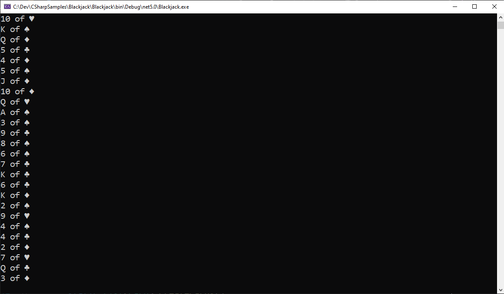
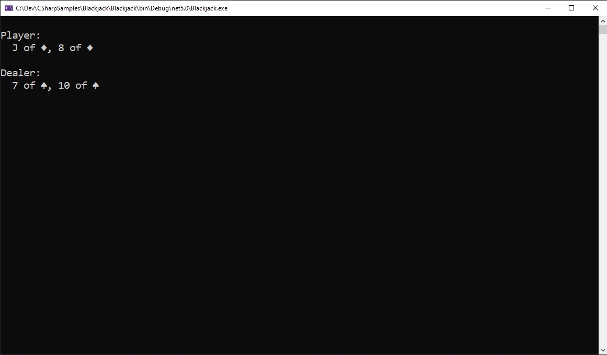
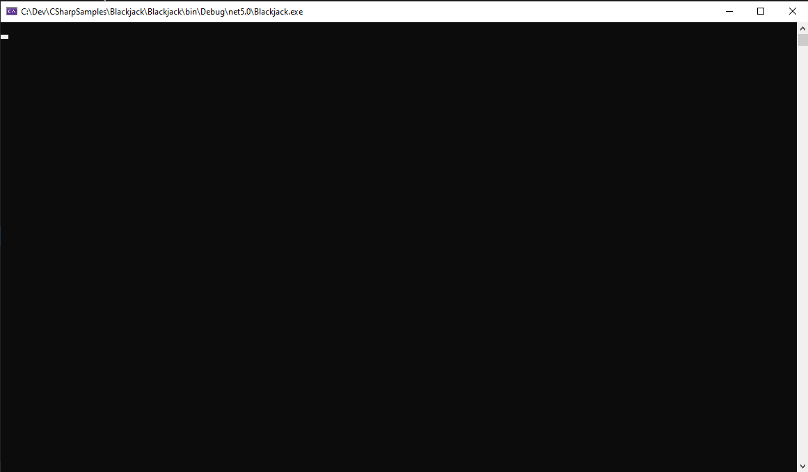
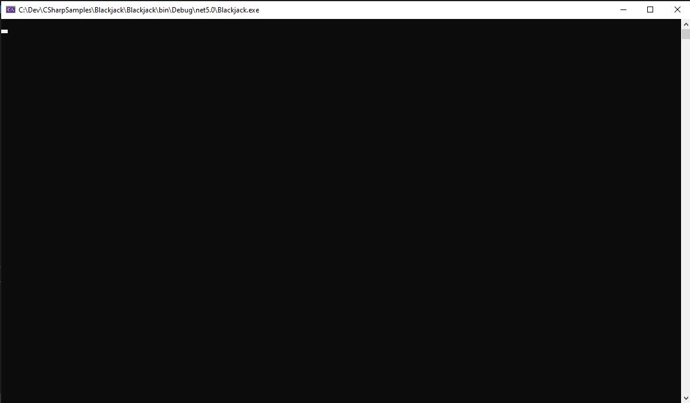

In this exercise, we're going to implement a console app to play single-player (one player, one dealer) Blackjack.
Here are the rules of the game. The only thing it doesn't make sense to do in this console version of the game is to cut.
Here is what it would look like at the very end of exercise. If you want to try to break this down yourself, feel free. If you want, I'll walk you through how I did it below.
First thing is to model a deck of cards in code. You'll probably want to create a Card and use a List or a Stack to represent the grouping of the cards. Create all the cards and print them to the console.
For a proper game you must, of course, shuffle that deck.
Now that we've proven by console logging that we're actually shuffling our deck, we can dispense with the previous console logs and move on to the idea of having hands. The player has a hand and the dealer has a hand, and each starts with two cards in the initial deal.
The second card for the dealer is supposed to be face down so the player can't see it. For now this will make debugging the game harder if we can't see all the values, so we'll defer that feature till later.
The player has to decide if they want another card or not. Ask them if they want to hit or hold/stand, and if they hit give them another card and redisplay that hands. If they respond with something that doesn't make sense, ask again. If they choose to hit, you ask again. You ask until they say they want to hold.
I added in a little formatting to make it easier for me to read, but feel free to do otherwise.
If any hand reaches over 21 points, they automatically bust. If they payer hits and they bust, game over.
Note: The calculation is a great bit of code to write unit tests for.
The dealer most hit if they have less than 17 in their hand, hold if they have higher.
Now you can determine the winner. If the player has a higher score than the dealer without busting, they win. If the dealer has a higher score than the player without busting, it wins. If there is a tie, no one wins.
Or, if the dealer wins.
Now let's handle getting a blackjack (natural 21). If the player gets a blackjack and the dealer does not, they win automatically. If the dealer gets one and the player does not, it wins automatically. If both get a blackjack, it's a tie.
According to the rules, the second card for the dealer is dealt face down so the player can't see it. The card is revealed when the player's turn is over.
When the hand is over, do it again! But ask them if they want to continue or not.
The player starts with $100. Each hand is played with a bet of $5. If the player loses, they lose $5. If they win, they get $5. If the player gets a blackjack, they win $7.50.
If you're reading ahead, you can start this one earlier. Regardless, add some color to make it a little easier to read.